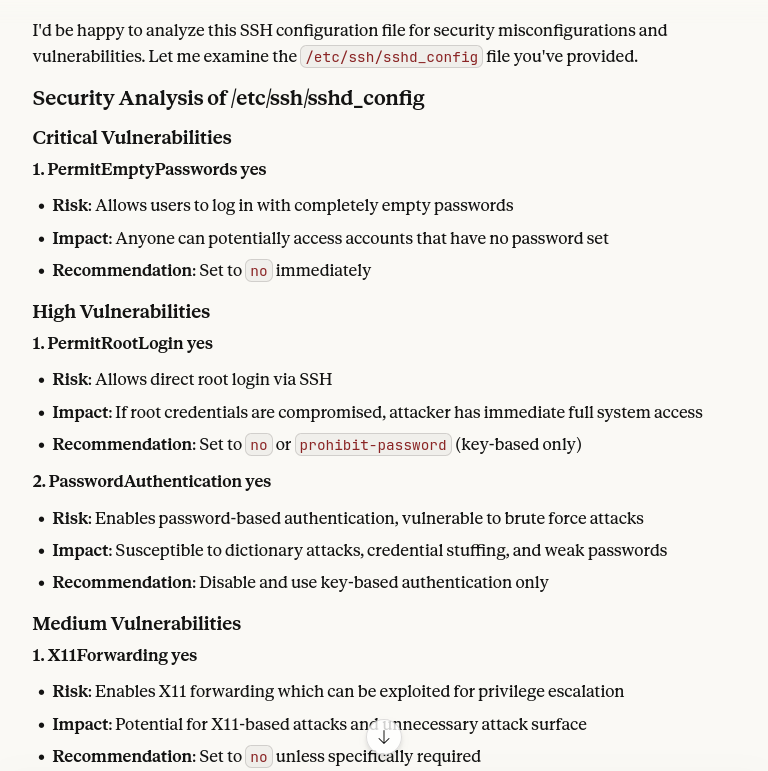

Presoja varnosti strežnikov Linux z uporabo jezikovnih modelov
Andraz Vrhovec, Koofr
NTK 2025
whoami
- koofr.eu - slovenska oblačna shramba
- Locked Shields Linux team
- COVID-19 Sledilnik dev(ops) guy
- Deklica za vse kar dela na ničle in enke
Kaj nas čaka?
- Osnove LLM (Large Language Models)
- Varnostne ranljivosti v Linux konfiguraciji
- Kako LLM pomagajo pri analizi
- Praktični primeri in orodja
- Najboljše prakse in omejitve
Kaj so veliki jezikovni modeli (LLM-ji)?
- Jezikovni modeli - razumejo in generirajo besedilo
- Predhodno naučeni na velikih količinah besedil
- Kontekstualno razumevanje - razumejo pomen v kontekstu
- Vzorci in strukture - prepoznajo znane vzorce
Za varnost: Lahko prepoznajo znane varnostne vzorce in anti-vzorce
Prednosti LLM za varnostno analizo
- Prepoznavanje vzorcev - identificirajo znane ranljive konfiguracije
- Kontekstualno razumevanje - razumejo odvisnosti med nastavitvami
- Hitrost analize - obdelajo velike količine datotek v kratkem času
- Raznolikost formatov - delajo z različnimi konfiguracijski formati
- Razlaga in priporočila - ne samo odkrivajo, ampak tudi razlagajo probleme
Tradicionalni pristopi vs. LLM
Tradicionalni pristopi
- Statična pravila
- Regex vzorci
- Vnaprej definirane preveritve
- Omejena prilagodljivost
LLM pristop
- Dinamično razumevanje
- Kontekstualna analiza
- Prilagodljive preveritve
- Naravnojezične razlage
Linux konfiguracijske datoteke
Nekaj primerov najpogosteje analiziranih datotek:
/etc/ssh/sshd_config - SSH konfiguracija/etc/sudoers - Sudo privilegiji/etc/fstab - Datotečni sistemi/etc/passwd, /etc/shadow - Uporabniški računi/etc/cron* - Načrtovane naloge/etc/nginx/nginx.conf - Web strežnik/etc/apache2/apache2.conf - Apache konfiguracija
Tipične varnostne ranljivosti
SSH konfiguracija
- Root login omogočen
- Šibko overjanje
- Prevelike pravice
Sudo pravice
- NOPASSWD za kritične ukaze
- Preveliko uporabljanje wildcardov
- Neustrezne skupine
Datotečni sistemi
- Sticky bit, SUID in SGID
- Neustrezne pravice
- Nezaščitene priklopne točke (npr. /tmp brez noexec)
Web strežniki
- Napake v SSL/TLS konfiguraciji
- Odtekanje informacij (open dir)
- Neustrezne varnostne glave
Kako LLM pomagajo pri analizi?
- Prepoznavanje konteksta - razumejo namen konfiguracije
- Odkrivanje neskladij - primerjajo z najboljšimi praksami
- Analiza odvisnosti - prepoznajo konflikte med nastavitvami
- Prioritizacija - ocenijo resnost ranljivosti
- Priporočila - predlagajo konkretne izboljšave
Rezultat: Celovita analiza, ki presega osnovne sintaksne preveritve
Primer: SSH konfiguracija
Problematična konfiguracija:
# /etc/ssh/sshd_config
PermitRootLogin yes
PasswordAuthentication yes
PubkeyAuthentication yes
PermitEmptyPasswords yes
X11Forwarding yes
LLM analiza:
- Kritično: Prazna gesla dovoljena
- Visoko tveganje: Root login omogočen
- Srednje: X11 forwarding lahko predstavlja tveganje

Primer: Sudo konfiguracija
Nevarno nastavitev:
# /etc/sudoers
user1 ALL=(ALL) NOPASSWD: ALL
%admin ALL=(ALL) NOPASSWD: /bin/*, /usr/bin/*
user2 ALL=(ALL) NOPASSWD: /usr/bin/vim /etc/passwd
LLM prepozna:
- Preširoke pravice za user1
- Nevarni wildcardi za admin skupino
- Vim lahko ureja sistemske datoteke
- Predlaga specifične ukaze namesto wildcard-ov
Orodja in implementacija
API pristopi
- OpenAI GPT
- Anthropic Claude
- Google Gemini
- Lokalni modeli (Ollama)
Implementacijske možnosti
- Skripta z API klici
- Integracija v CI/CD
- Samostojno orodje / web aplikacija
- Integracija z orodji za avtomatizacijo (Ansible)
The painpoint
- Locked Shields, ~120 Linux VMjev, ki jih ne poznaš, ~10 ljudi jih mora pregledati v ~3 dneh
- Različne verzije in distribucije, heterogeno okolje, težko pripeljati enotno resitev
- Pomagali smo si z ročnim pregledovanjem, skriptami kot so Linpeass, Lynis, rkhunter, sudo_killer ...
- Ugotovitve se pogosto podvajajo med razlicnimi orodji -> potrata časa
- Kaj če bi namesto nas AI prebral poročila in nam ustvaril "enotno" poročilo?
- Bonus: Lahko nam ze pripravi ideje za popravke v copy-pastable obliki Ansible taskov!
Praktični workflow
- Zbiranje datotek - avtomatsko prebiranje konfiguracij
- Predprocesiranje - odstranitev občutljivih podatkov
- LLM analiza - pošiljanje na analizo z ustreznimi pozivi
- Obdelava rezultatov - strukturiranje ugotovitev
- Prioritizacija - razvrščanje po resnosti
- Poročanje - generirane priporočila
- Avtomatski popravki - samodejna priprava popravkov
AI Audit Ansible Role - Pregled
Ansible vloga za avtomatsko varnostno presojo Linux strežnikov z uporabo AI
Sestavni deli:
- Zbiranje sistemskih informacij
- Izvajanje varnostnih orodij (LinPEAS, Lynis, RKHunter)
- AI analiza z Google Gemini
- Generiranje poročil
Glavne naloge:
system_info.yml - sistemske informacijelinpeas.yml - privilege escalationlynis.yml - sistem auditanalyze.yml - AI analiza
Kako deluje AI Audit vloga
- Priprava okolja - ustvarjanje direktorijev, preverjanje API ključa
- Zbiranje podatkov - sistemske informacije, uporabniki, procesi, konfiguracije
- Izvajanje varnostnih orodij:
- LinPEAS - iskanje možnosti dviga privilegijev
- Lynis - celovit sistem audit
- RKHunter - preverjanje rootkit-ov
- AI analiza - Google Gemini analizira vse zbrane podatke
- Poročanje - generiranje Markdown poročila
Najboljše prakse
✓ Dobro
- Strukturirani prompt-i
- Nastavitev nizke temperature (in top_k in top_p) za konsistentne rezultate
- Predprocesiranje občutljivih podatkov
- Kombinacija z tradicionalnimi orodji
- Validacija rezultatov
- Dokumentiranje ugotovitev
✗ Izogibajte se
- Slepo zaupanje rezultatom
- Pošiljanje občutljivih podatkov
- Zanemarjanje konteksta
- Avtomatsko implementiranje sprememb
Omejitve LLM pristopa
- Zasebnost podatkov - potencialno pošiljanje na zunanje API-je
- Kontekstualne omejitve - modeli imajo omejitve velikosti vhodnih podatkov
- Haliucinacije - možnost napačnih ali izmišljenih ugotovitev
- Stroški - API klici lahko postanejo dragi pri velikih volumnih
- Odvisnost od interneta - za API klice je potrebna povezava
Opozorilo: Vedno validirajte rezultate z drugo analizo oz. "na roke"
Zaključek
- LLM predstavljajo močno orodje za varnostno analizo
- Najbolje delujejo v kombinaciji s tradicionalnimi pristopi
- Pomembno je razumevanje omejitev in tveganj
Hvala za pozornost!